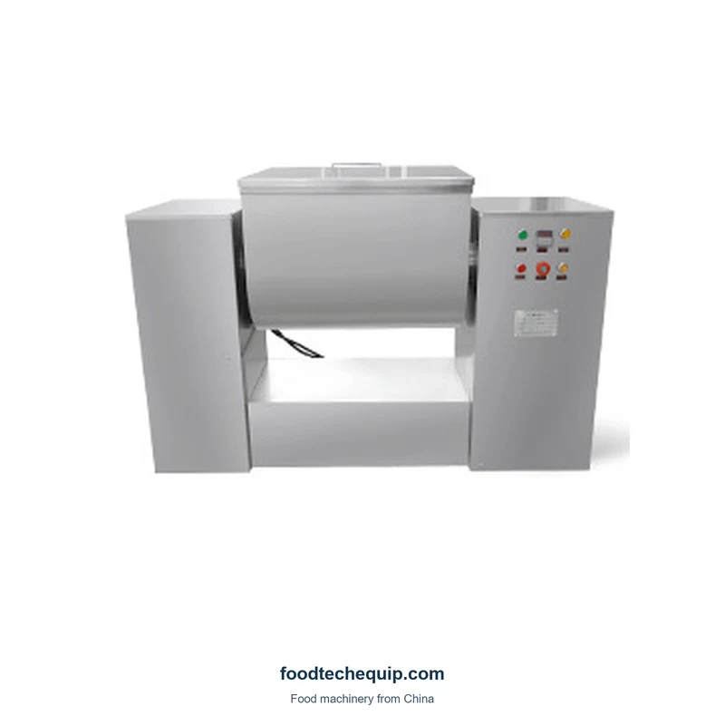

Mezclador de artesa horizontal CH-50, vista equipo
Selecciona la imagen para verla más grande.
Mezclador de canal horizontal Serie CH
Cinco modelos de mezcladores de canal horizontal con volúmenes nominales de 10 L a 200 L. Compare el tamaño del lote, los controles y las dimensiones de instalación para su tarea de mezclado.
- Volumen nominal del comederoCinco modelos; ver tabla comparativa
- 10–200 L
- Velocidad de mezcla
- 24 rpm
- Ciclo de mezclaLa selección del ciclo depende del material
- 5–20 minutos
Selección de equipos · Guía de instalación · Soporte remoto
Explorar información del producto ↓Descripción general del producto
La serie CH combina una cuba de mezcla horizontal cubierta, un eje de mezcla interno y una carcasa de acero inoxidable. Elija entre CH-10, CH-20, CH-50, CH-100 y CH-200 según su material, la carga del lote prevista y el espacio disponible. Los modelos más pequeños tienen una carcasa y una disposición de control diferentes a los de los modelos más grandes.
Características
- Mezclador cubierto con tapa y asa.
- Eje mezclador interno y paletas.
- Carcasa de acero inoxidable.
- El diseño del panel de control más grande incluye funciones de arranque, parada, parada de emergencia, control de tiempo, reinicio y descarga. La disposición del panel varía según el modelo.
Especificaciones y configuraciones
Desplácese horizontalmente para comparar todos los detalles del modelo.
| Modelo | Potencia del motor | Voltaje | Volumen canal | Ciclo de mezcla | Velocidad de mezcla | Carga máxima | Peso de la máquina | Dimensiones (mm) |
|---|---|---|---|---|---|---|---|---|
| CH-10 | 550 W | 220 V | 10 L | 5–20 minutos | 24 rpm | — | 50 kg | 760 × 330 × 500 |
| CH-20 | 750 W | 220 V | 20 L | 5–20 minutos | 24 rpm | — | 60 kg | 800 × 360 × 580 |
| CH-50 | 1.65 kW | 380 V | 50 L | 5–20 minutos | 24 rpm | 15 kg | 150 kg | 1200 × 460 × 840 |
| CH-100 | 2.05 kW | 380 V | 100 L | 5–20 minutos | 24 rpm | 30 kg | 240 kg | 1400 × 480 × 950 |
| CH-200 | 3.75 kW | 380 V | 200 L | 5–20 minutos | 24 rpm | 60 kg | 450 kg | 1810 × 750 × 1220 |
El volumen del canal y la carga del lote son medidas diferentes. Analice la carga de trabajo de su material y la densidad aparente.
Seleccione el ciclo de mezcla para su formulación y el resultado de mezcla requerido.
Las dimensiones son aproximadas. Solicite un plano de instalación para la planificación del diseño.
Para CH-10 y CH-20, incluya el peso de lote objetivo en la consulta.
Controles y vaciado
El diseño del panel más grande proporciona controles para el tiempo de mezcla y descarga junto con inicio, parada, parada de emergencia y reinicio. Analice el idioma del panel y la disposición de vaciado del modelo seleccionado.
Elija el tamaño de lote correcto
Comience con la carga objetivo por lote, la densidad aparente, el contenido de humedad y la consistencia del material. El volumen nominal del canal describe el tamaño del recipiente; la carga de trabajo depende del material y de las condiciones de funcionamiento.
Comparta el resultado de mezcla que necesita y cómo se evaluará, para que puedan discutir juntos el tamaño del lote y el tiempo de mezcla.
Carga y transferencia de planos
Describir cómo ingresará el material al comedero, cómo se vaciará cada lote y cómo llega al siguiente paso de dosificación o llenado. Incluya el método de transferencia, el equipo de recepción y el espacio disponible en su consulta.
Dónde encaja esta tarea en tu proceso
La mezcla prepara un lote antes de la dosificación o el llenado por separado. Muestre cómo se transfiere el material entre etapas, incluida la altura de recepción y el equipo necesario.
Aplicaciones y guías prácticas
Cuéntanos tus requerimientos.
- ¿Qué modelo de CH estás considerando?
- ¿Qué material se mezclará? ¿Puede proporcionarnos una muestra?
- ¿Cuáles son su densidad aparente, contenido de humedad y pegajosidad?
- ¿Cuál es la carga prevista por lote y cómo se evaluará el rendimiento de la mezcla?
- ¿Cómo se cargará y vaciará el comedero?
- ¿De qué suministro eléctrico y espacio de instalación se dispone?
- ¿Cuál es el destino?